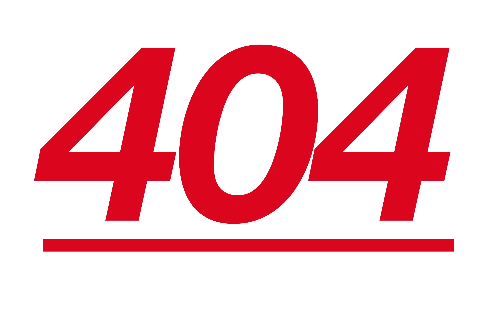
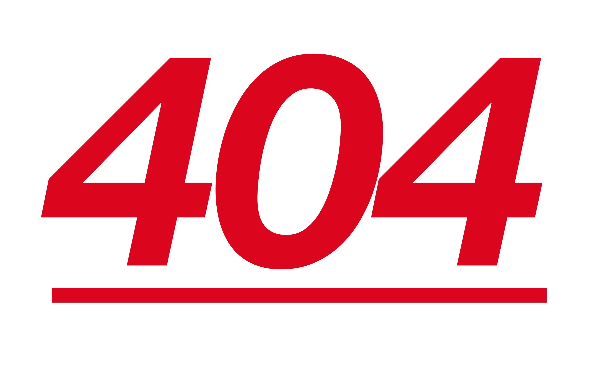

{% if post.thumbnail %}
 {% else %}

{% endif %}
{{post.title}}
{% else %}

{% endif %}
{{post.title}}
date_range {{post.date | date: "%d/%m/%Y"}}
{{ post.content | strip_html | strip_newlines | truncate: 500 }}…
- {% if paginator.previous_page %} {% if paginator.previous_page == 1 %} {% else %} {% endif %} {% else %} {% endif %} chevron_left {% if paginator.page == 1 %}
- 1 {% else %}
- 1 {% endif %} {% for count in (2..paginator.total_pages) %} {% if count == paginator.page %}
- {{count}} {% else %}
- {{count}} {% endif %} {% endfor %}
- {% if paginator.next_page %} {% else %} {% endif %} chevron_right